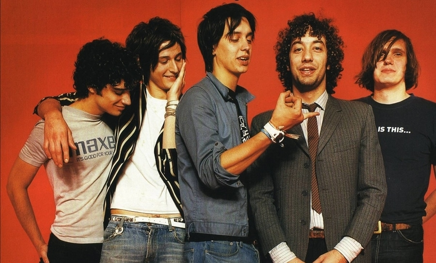
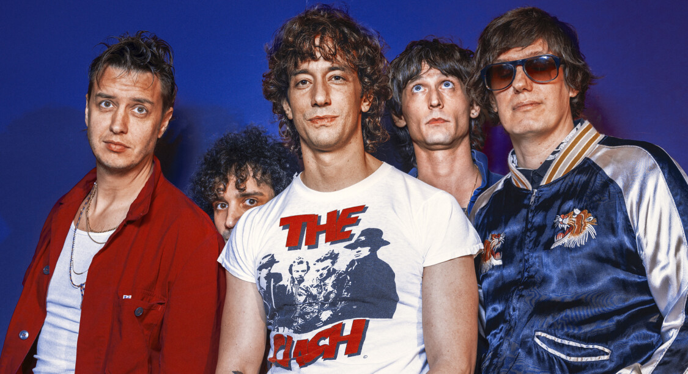

C’est sur les bancs de l’école que Julian Casablancas
et Nikolai Fraiture se sont rencontrés.
Alors à peine âgés de six ans, cette amitié se transforme, avec les années, en collaboration
musicale. Ils croiseront sur leurs chemins, quelques années après, Fabrizio
Moretti, le batteur,
Nick Valensi, un des deux guitaristes et finalement
Albert Hammond, le second, qui complètera le
groupe.
En 2001, le quintet sort Is This it, une claque et
une caresse pour le
public comme pour eux, à
l’image de leur nom de scène “The Strokes”. Le succès
est phénoménal,
le monde les déclare comme
“les sauveurs du rock” et ils se retrouvent propulsés
au sommet en
quelques mois.
Suite à cette ascension, les Strokes enchaînent les albums, sans succès. Ils finissent même par
faire une pause entre 2007 et 2010.
2013, ceux que l’on considère comme les successeurs de Television et de Velvet Underground,
sortent, 2 ans à peine, après le quatrième (Angles), leur cinquième album : Comedown Machine.
Les retours, quant à eux, sont très mitigés.
Va s'en suivre une pause de 7 ans, de laquelle ne sortira qu’un EP qualifié d’anecdotique.


Il faudra attendre 2020 et Rick Rubin, le
géant de la production rap et heavy métal avec lequel
les Strokes s’associent pour ce sixième album : The
New Abnormal. Un
album haut en couleurs, qui
a conquis les plus réfractaires !